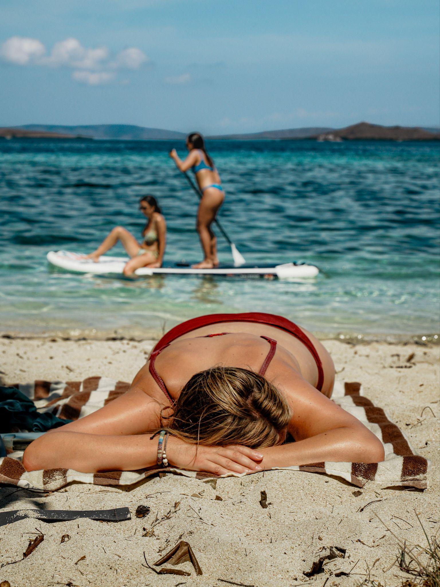

A stretch of pale sand, clear shallows, and a hill rising above the shore. Kanawa Island invites you to slow down and enjoy the space between one adventure and the next.
Spend the morning looking beneath the surface, take a short walk for a wider view, or simply settle in by the water. Here’s what to know before adding Kanawa to your boat trip.
Three reasons to stop at Kanawa
From the shoreline to the hill, each perspective reveals a different side of the island.
- 01
Water worth looking into
Clear shallows offer a chance to see fish and coral. Visibility and sightings vary with conditions.
- 02
Time to do less
A sandy shoreline makes space for a slower pause between destinations.
- 03
A view from above
The island’s hill offers a wider perspective across the water and nearby islands.
Three ways to spend your time
Pick one, or mix them all. Kanawa can be as active or as unhurried as your itinerary allows.

Stay a little longer
Best for unhurried timeSettle on the sand, enjoy the view, or watch the light change across the water. Sunrise and sunset are especially appealing when your itinerary allows an early or late stop.
- Bring a towel and find a spot at the water’s edge.
- Use the beach and hilltop for different photo perspectives.
- Take your time and leave the shoreline as you found it.
Explore the shallows
Best for snorkelingSnorkel when conditions and your guide allow, looking for fish and coral along the way. Sightings vary with the day, so treat anything you see as a bonus.
Ask your operator about diving options and the day’s conditions before you enter the water.
- Wear a life jacket or snorkel vest if you’re not a confident swimmer.
- Avoid touching or standing on the reef.
- Use reef-safe sunscreen to protect the coral.
Walk up for the view
Around 10–20 minutesA short hill walk may offer panoramic views across the water and nearby islands. It is a gentle way to add a different perspective to your beach day.
Check with your guide about access, the route, and current trail conditions.
- Wear sturdy sandals or shoes with good grip.
- Carry water and a hat for the exposed sections.
- Go earlier or later in the day to avoid the strongest sun.
How to get to Kanawa Island
Kanawa is reached by sea, so the trip itself becomes part of the day.
Board in Labuan Bajo
Join your boat at the harbor and set out across the water.
Cross by speedboat
~60 minTravel time depends on the vessel, route, and sea conditions.
Possible stops nearby
Some trips may also visit Manjarite, Siaba, or Sebayur. Confirm your itinerary with your operator.
Arrive at Kanawa
Step onto the sand and spend the time that suits your itinerary.
Best time to visit Kanawa Island
April to October is generally the dry season, which tends to suit boat days best.
Generally dry season · April – October
Early morning
Softer light and a calmer start to the day, good for the beach and a first look at the water.
Snorkeling
Visibility depends on weather, currents, and tides, so there is no fixed best hour. Ask your crew.
Late afternoon
Warm, soft light over the water, lovely for photographs if your itinerary allows a later stop.
Conditions can change. Ask your boat crew about the day’s weather and follow their advice before entering the water.
Pack light, pack ready
Tick things off as you gather them. Nothing here is saved.
Save a little time for Kanawa
Whether you’re here for the clear shallows or a quiet moment on the beach, find a boat trip with space for the experiences you enjoy.
Explore boat trips